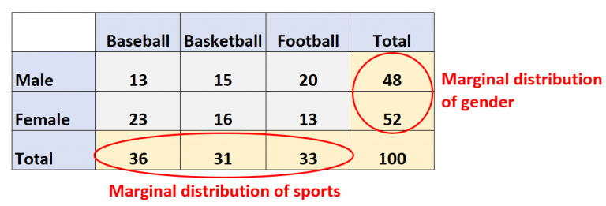
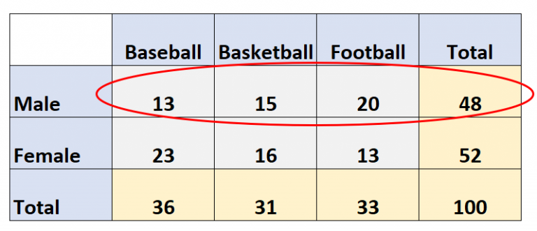

Researches about pure theory (T)
T4. Concept of distribution. Univariate and multivariate. Conditional and marginal distributions.Researches about applications (A)
A2. Make a simple demo program which uses the objects RANDOM and TIMER in C# and VB.NETResearches about theory relevant to applications (TA)
TA2. Summarize the main aspects of the CSV protocol RFC 4180 (definition and rules)T4.
To talk about distribution we need a dataset, containing the statistical units, the attributes, and their relative values.
We define as "relative frequency" the number of units that have a value of a selected attribute, over the total number of units.
We made an example in class regarding eye colour of the students. We analyzed how many students have blue eyes.
For example if we have 10 students and 2 of them have blue eyes, we can say that the relative frequency of blue eyes is 2/10.
So we can define "distribution" as the set of relative frequencies regarding a choosen attribute (in our case eye colour).
In our example the distribution of eye colour can for example be 2/10 blue, 6/10 brown and 2/10 green, the sum of all the values should always be 1.
The distribution is done in a different table and the data come from the initial dataset.
If we analyse only one attribute we define the distribution "univariate" (in our case the eye colour).
Otherwise if we analyse more than one attribute the distribution is called "multivariate" and it is done through the "join frequency"
(if two it is called "bivariate" (for example eye colour and height)).
We define "marginal distribution" as the distribution of the individual variables.
In a two-way table, the marginal distributions are shown in the margins of the table.
If we consider only one column or one row from a multivariate distribution we retrieve a univariate distribution, the so called
marginal distribution.
In fact we override the influence of the other distributions (it is used to focus on a specific attribute).
On the other hand we call "conditional distribution" the distribution of one attribute in relation to another one.


A2.
AGAGA2
A3.
AGAGA3
A4.
AGAGA4
TA2.
AGAGA5